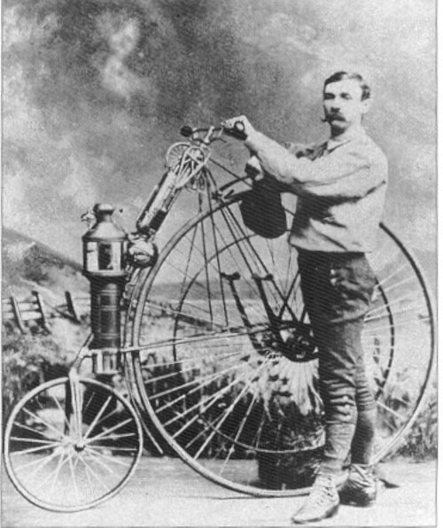
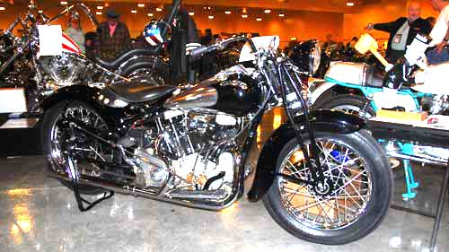

In the 1860s, Pierre Michaux of Paris built the first pedal bicycles called velocipedes. In 1867, his son Ernest added a steam engine, creating an early steam motorcycle. In 1866, Pierre Lallement patented the bicycle in the USA. In 1868, Sylvester H. Roper (USA) and Louis-Guillaume Perreaux (France) independently developed steam velocipedes. Roper died demonstrating his machine in 1896. In 1881–1887, Lucius Copeland built faster steam motorcycles and produced the first successful motor-cycle.
First bike
In 1884, Edward Butler of England designed the first commercial self-propelled bicycle, the Butler Petrol Cycle, a three-wheeler shown in London in 1884 and 1885. Built in 1888, it used a petrol engine but failed commercially. In 1885, German inventors Gottlieb Daimler and Wilhelm Maybach built the Petroleum Reitwagen, the first internal-combustion, petrol-fueled motorcycle. Daimler is widely known as the “father of the motorcycle.”

During World War I (1914–1918), motorcycles replaced horses for military communication; Harley-Davidson and Triumph supplied thousands, with Triumph’s Model H (1915) often called the first modern motorcycle. After WWI, Harley became the largest maker by 1920; BMW entered in 1923. In 1937, Joe Petrali set speed records. In WWII (1939–1945), BSA and Royal Enfield produced military bikes. Post-war Europe favored practical transport like the Vespa (1946). Honda became the largest manufacturer in 1959, leading Japanese dominance. The Honda CB750 revolutionized the market. Innovations continued with factory fairings (BMW, 1977), diesel bikes (2006), and flex-fuel motorcycles (Honda, 2009–2011).
